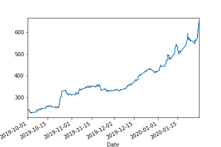
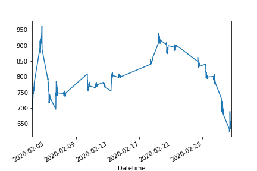
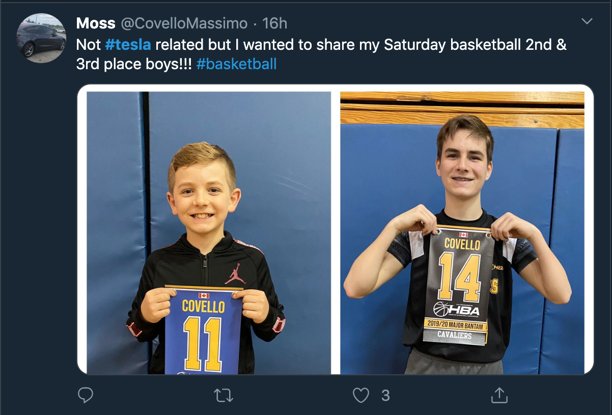

Our project is a mix of a prediction and hypothesis project on how Tesla's stock moves depending on different factors. We had first wanted to predict how well sentiment analysis on tweets will affect an RNN deep learning model's ability to predict whether or not the next day is going to open higher or lower than the previous day. This project has become a hypothesis project in which we compare this model against a baseline model to determine whether or not twitter sentiment data adds any statistical significance towards producing a better model than just stock data for the RNN.
We have two sets of data that we collected for our project, the stock data and our tweet data. For the stock data, we used Yahoo Finance’s stock API in order to query information regarding Tesla stock such as the date, opening price, and the closing price. In our case, we used the python wrapper, ‘yfinance’ to grab the information that we needed. As of right now, our stock data only encompasses the month of February in 15 minute increments due to the limited availability of tweets that we were able to get with the Standard API. We also created a database containing 5 months worth of TSLA stock data in 1 hour increments to train an RNN deep learning model to compare the effectiveness of our Twitter model against. Yahoo Finance’s API is reputable and commonly used to grab stock data. The RNN data has 582 stock data points while the stock data for the month of February has 494. Note: The csvs in our data represent the smaller, easy to read downloadable data.
 
Figure 1: Rnn Data Graphed Figure 2: Test Stock Data
For the tweets, all four of us got standard API accounts to get the most amount of tweets possible in the past 30 days using the sandbox Twitter Search. Since we planned on coding in python, we used a Twitter API wrapper, ‘TwitterAPI’, since Tweepy does not support premium API access nor sandbox access of the search API. Twitter is the only website that contains tweets, so it is safe to assume it is reputable. This sample was generated from querying the 30 day sandbox database on four different twitter API accounts and merging the four tables together. As of right now, we were able to gather 71,600 tweets which could be much larger, but we were limited by the number of requests that each account could execute. In addition, the sandbox API is only able to provide us tweets from the most to least recent meaning that our data at the moment is not that representative. In order to use our requests to the best of our ability, we chose to query 100 tweets at each hour, but this provides us with around 5 - 7 minutes of tweets for each hour which is not really representative of the past 30 days. In order to get a better representation of tweets per hour, we would need more tweets per hour which the premium API would help us get. Since we only collect data from the most recent of each hour, some sampling bias could have occurred. We could miss out on important information in that case.
When collecting our Tweet data, we chose to only collect data on english tweets since Tesla may mean something different in another language. We also had to filter out our tweets to not include Nikola or coil because they my reference the person, Nikola Tesla, or the device, the Tesla coil which is not the intent of our tweet data. Tweets are considered user’s data, but since we do not take their username, we have anonymized the tweet, but for sentiment analysis reasons, we cannot really anonymize the rest of the tweet. The data does not seem to be skewed in any direction, but there seems to be more positive than negative sentiment tweets of the month of tweets that we scraped for.
The stock data cannot really be cleaned and it contains all the information that we should need. Considering that we are training our baseline RNN on this stock data and then our twitter RNN will contain the same information plus the sentiment analysis, it doesn't really matter what the state of the stock data will look like. According to this research paper, the date, open, close, high, low, and volume should be enough information to train an RNN. There are not missing values since the API was able to grab all stock information that we needed. Stock data does not really follow a distribution, but we can assume it is somewhat random around a trend. The maximum Adjusted Close over the month of February was 917.419982910156 while the minimum was 667.989990234375.
Regarding the tweet data, much of the cleaning occurred when querying the API. We were able to get only english tweets, tweets with TESLA or TSLA, and to ignore ‘coil’ and ‘nikola’. After filtering, there are 71600 tweets, 10790 that have a negative sentiment, 31881 that are neutral, and 28929 that are positive. There are no missing values or duplicates. We think this is a lot of data that will allow us to perform enough analysis with some techniques, but we would like to have more since our data is biased--all of our tweets were tweeted close to the end of each hour, because the Twitter API gave us results from most recent in the hour to least recent in the hour. There are no data type issues, and we do not think we need to throw any data away. One problem that we did run into was that some tweets would be impossible to actually clean since they tick all of the boxes of tweets we are looking for, but are not really related. Since these tweets are far and few, this should not really be a problem. An example is provided below:
Figure 3: Bad tweet that is hard to clean
The max retweet count was 13142, max favorite count was 16100, max reply count was 2214, and the max quote count was 1534. The minimum for all of these was 0.
One problem that we may have in the future that is really not that difficult to solve is that in the Tweets table, the time is a DATETIME object while in the stocks table, the time is a String object instead.
One of the major challenges we’ve had since collecting the data is limits on how much data we can collect. Twitter’s API only allows us to collect 100,000 tweets total, and much more 100,000 tweets about Tesla have been tweeted within the past month, so we had to resort to sampling a specific amount of tweets at specific times. In our case, we decided that we would sample 100 tweets every hour to get an idea of the sentiment during that time. However, this generally only covers about 5 minutes of data per hour, so this means we have large gaps in our data. This affects what analysis we will perform by preventing us from doing continuous analysis, since in a majority of our timeframe we have large gaps in our data. In terms of next steps, we would like to collect a little more data using Twitter Premium API so that we have a better, more continuous dataset that could give us better predictions.
Collecting stock data was fairly straight forward as stock market data is almost perfectly clean. One challenge we had, however, was representing the date of each stock data. Originally, it came in a DateTime format, but by converting it to a string, we were able to query our SQL database easier.